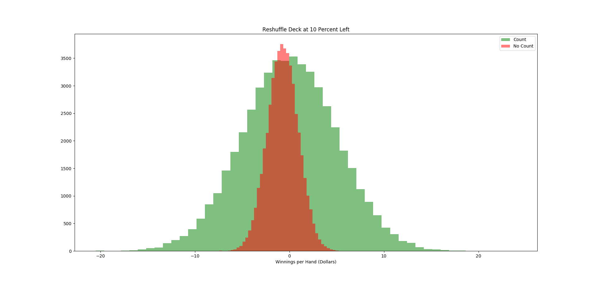
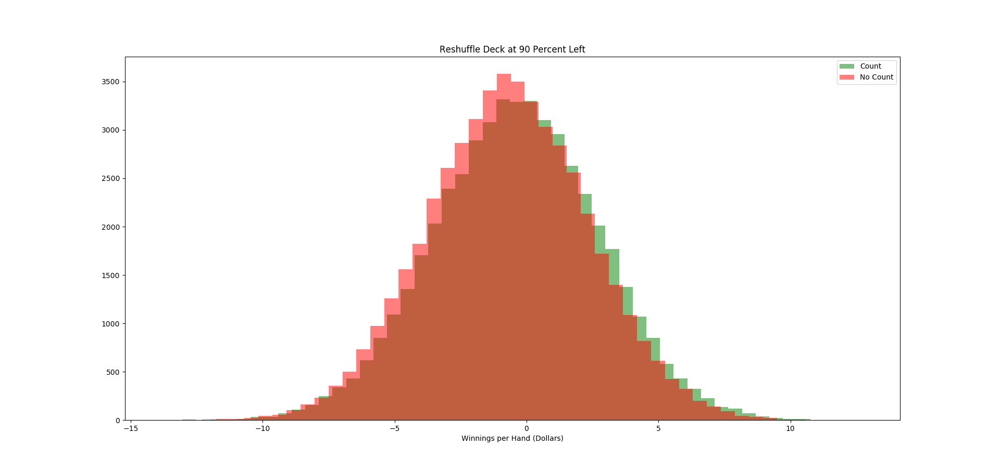

Card Counting in Blackjack
By: Paul Abers
Abstract:
A computer program was designed to simulate hands in Blackjack in order to find the statistical significance, if any, of card counting in Blackjack. The program showed that with a penetration point deep enough into the deck (90 percent), a card counter can expect to win money over time. However, the counter’s edge here is only about 0.2 percent per hand on average.
Introduction:
Blackjack is one of the most well known and most played gambling card games in casinos. Like all casino games, the house has the edge. The house expects to always take home money in the long run. Which is why they try and entice as many customers to play as much as possible. Because they know, according to the law of large numbers, that overtime the aggregate of results will approach the mean. On any one hand the house might lose considerably, but the house knows that it will eventually recoup its losses and then some as more and more people gamble their money away.
Rules of Blackjack:
Blackjack is probably the most well known name of any game that one can find in a casino. It is synonymous with gambling, casinos and money in modern culture. One of the key reasons for Blackjack’s popularity, other than its catchy name, is the supposed prospects for a player to get an edge on the house. To prove the house always has the edge in other games such as Roulette or Slots is a trivial matter. However, to prove the edge of the house in Blackjack is slightly more difficult. There are many rules, variations, strategies and variables in Blackjack. The basic rules of Blackjack are simple. It is the player/s versus the house (from here on out, I will refer to the house as the dealer). The goal of the game is to have your hand total more than that of the dealer’s. Each card in a deck has a certain value, an Ace is either 1 or 11 (whichever is more beneficial for the player), a number has the value of itself (a 3 is a 3) and then all face cards are 10. Each player is dealt two cards, dealer included. The players can see each others’ cards, but only one of the two cards the dealer has is visible. The player then decides if they want to hit (receive another card) or stand (stay at their current hand’s total) based on the total their cards have and what the dealer shows. The highest total a hand can have is 21, if you go over 21 you bust. If a player busts, they automatically lose their bet. The dealer does not make choices or use strategy when hitting or standing. If the dealer has less than 17 they hit, if they have 17 or more they stand (note that there is a soft 17 variation to blackjack). If the dealer has more than the player, the player loses their bet. If the player has more than the dealer, the player wins their bet. If they tie, the player keeps their bet but receives no extra money. There also is a special hand called Blackjack. The namesake of the game. If a player is dealt an Ace and either a 10 or face card, they automatically win the hand (as long as the dealer does not have a Blackjack as well). The payout for a standard win is 1:1, whereas the payout for a Blackjack is 3:2 (modern casinos have started to switch to 6:5, which a person should never play in as the odds severely favor the house in this instance).
After the basic rules, there are some additional, more nuanced rules. The game variations I looked into when creating my simulation were doubling, splitting, soft 17, surrender and insurance. Doubling is when a player can double their bet after receiving their hand. It can only be done when a hand has two cards. Some casinos only allow doubling on 9, 10 or 11, others allow doubling at any time. In my code, doubling is allowed for any card total. Splitting is when a player is dealt two of the same card. The player can split their cards into two hands by placing the same size bet on the new hand. A player is then dealt one new card to each hand and now plays both hands separately, one at a time. When splitting there are several catches. In most cases, when splitting aces, the player can only receive one card and cannot hit again. Also, a blackjack on split aces (or ten valued cards) does not count as a blackjack, only as a hand with 21 score. Some casinos allow doubling down as well after splitting, others do not. Some also limit how many times a player can split. In my code a player can split as much as they would like and can double down if they would like. However, aces only receive one more card after splitting. Surrendering is when a player, after receiving their hand, can choose to pay half their bet and surrender their hand. They guarantee themselves a loss, but in certain circumstances it is the best option. Insurance is when a player can pay a small amount (varies by casino) as insurance against a dealer having blackjack. This is only necessary when the dealer shows ace. Soft 17 refers to when a dealer must hit. If a dealer has a soft 17, meaning an ace counted as 11 to reach a value of 17, then the dealer either must hit or must stand depending on the variation. My code allows for either, but the data was collected for standing on soft 17.
Card Counting:
Now that the rules are explained and understood, it is time to discuss card counting. The idea is quite simple. If I know what cards have already been dealt, then the odds of receiving particular cards goes up or down and my play changes accordingly. In Blackjack there are tables with basic strategy. They tell you what to do given a particular hand and a particular card shown by the dealer. The tables I used in my simulation were borrowed from the website 888casino. With no card counting being done, then a player would bet the same amount on each hand and play each hand according to basic strategy. This is guaranteed to lose the player money over time. However, if a player counts the cards that have been played, then the player is supposed to be able to turn the odds their favor. There are many different card counting systems, but the most common and simplest is the hi-lo technique. In the hi-lo technique, a player starts the count at zero before any cards from the deck have been dealt. Then, if a 2-6 is dealt the player adds 1, if a 10, face card or Ace is dealt the player subtracts one. If 7-9 is dealt the player holds the count. Therefore, if the count is high than it means there are a lot of 10 value cards and aces left. If the count is low, there are predominantly more low cards left. A high count puts the deck more in the players favor. Therefore, a player is supposed to increase their bet amount in a high count deck and decrease in a low count. There are also strategy variations that correspond to different counts. The most famous are the illustrious 18 and the fabulous 4. Both have a player diverge from basic strategy depending on the count. The simplest change to understand is the insurance divergence in the illustrious 18. Typically, a player would not buy insurance when a dealer shows an Ace. However, the illustrious 18 says if a dealer shows Ace and the count is 3 or higher, the player should buy the insurance. This is because two main reasons. If the count is 3 or higher a player will have made a larger bet (according to counting rules) and have more reason to want insurance. Also, if the count is 3 or higher, than it statistically more likely for the dealer to have a 10 value card underneath equaling a blackjack. The other variations follow this same principle. I used the illustrious 18 and fabulous 4 strategies as mentioned on 888casino.com.
Originally card counting was very effective before casinos caught on. With only one deck and a long penetration point (point at which the dealer reshuffles all the cards), a player could get a strong picture of the cards remaining in the deck. To combat this, casinos started using multiple decks in their Blackjack games. Though theoretically this should have a minimal effect on the counting capabilities as long as the penetration point is still deep into the decks. The change in the count due to multiple decks is simply take the running count you have and divide by the decks left. That’s because a running count of +6 with 6 decks remaining is less suggestive than a +6 with one deck left. The large count is essentially diluted by the large amount of cards left. Due to the multiple decks, it takes longer for a player to see a high count (a pro-player count) as you have to divide by 6 deck initially (then 5 and 4 and so on). Therefore, the bet spread for a multiple deck game also changes. If we take our standard bet amount as one unit, then a player using the most common 1:12 bet spread would bet 1 unit for a count of one or lower, 2 units for a count of 2, 4 units for a count of 3, 8 units for a count of 4 and 12 for a count of 5 or higher. Clearly then, a player stand to risk the most money on higher count games (when the cards are significantly higher in their favor).
Simulation:
This study used a simulation written in python with object oriented programming. There were four classes created: Card, Deck, Hand, Blackjack. Card was a card that contained its suit and rank. Deck created a list of objects that was 52 objects long containing each of the cards in a standard 52 card deck. Hand is a child of Deck that allows a user to label it and the hand is initialized as empty instead of populated with all 52 cards. Blackjack was a much longer and more complex object with 8 inputs. The inputs are number of players, number of decks, use surrender, use count, use count multiplier, dealer hits soft 17, penetration point and random seed. Number of players currently only works with it equal to one but can easily be upgraded to multiple players. Number of decks should only be set to 3 or greater (the strategies for playing with one and two decks are not included in the code). Use surrender, use count and use count multiplier just allow the user to set if they want to allow late surrenders, count cards (and use the illustrious 18 variations) and if they want to vary their bets based on the count. Hit on soft 17 sets if the dealer will or will not hit on a soft 17. Penetration point sets at what point the dealer reshuffles the deck (with 1 being immediately and 0 being when all cards have been dealt). Random seed sets the random seed used for the random shuffle module that shuffles the decks.
A second code was used to run the simulation of many hands. Initially the user could set the number of rounds to be played to whatever they would like. However, this was changed after more thought as the number of rounds could end mid deck or at the end of a deck or beginning. Introducing wide variability in the outcome of playing. Therefore, it was changed such that the user could only simulate one pass through the deck. That way it was consistent with how the outcome would be. Then, many instances of one pass through the deck could be simulated and averaged to find the expected outcome. However, this too was somewhat limited. As the random seed for shuffling might just have been a fortunate or unfortunate seed to allow a user to do well or poor (with enough simulations this would not be true, but my computer lacks the computing power to handle many simulations). Instead, another loop was added to run multiple simulations of the many decks being played for multiple initial random seeds. Then, finally, a last loop was added to vary the penetration point from .1 to .25 to .75 to .9. So in the end there were four penetration points tested that used 100 different random seeds, that took the average of 1000 instances of a pass through the deck. This was also tested for both the case when a player was counting cards and changing their bets and strategies as well as the instance when they were not.
Results:
The simulation showed that for long penetration points, a player can expect to win money over time. However, as the penetration point is decreased, the player’s statistical advantage decreases. As the penetration point approaches 1, it also approaches the case of no counting. This makes sense, as the penetration point approaches 1, the player has less and less time to count cards. If the dealer were to shuffle immediately after every hand, than the count would always be reset to zero before the next bets are placed. Severely hampering our player’s advantage. The tables below show the winnings per hand and standard deviation per hand based on a 10 dollar bet as a standard bet for different penetration points.
Winnings/10$ Bet |
Pen Point .1 |
Pen Point .25 |
Pen Point .75 |
Pen Point 1 |
No Count |
-0.71 |
-0.70 |
-0.70 |
-0.70 |
Count |
0.02 |
-0.14 |
-0.26 |
-0.40 |
Standard Deviation |
Pen Point .1 |
Pen Point .25 |
Pen Point .75 |
Pen Point .9 |
No Count |
1.63 |
1.78 |
2.18 |
3.06 |
Count |
4.97 |
4.35 |
3.34 |
3.14 |
As seen in the table above, the penetration point was very important for the results of the counter. Another interesting thing to note is that the results of the non-counters have nothing to do with the penetration point. This actually makes sense, as the non-counter never changes strategy and so would not pay attention to what cards have and have not been dealt. The table has a clear indication that counting positively affects a player’s performance. Even for low penetration points (.75 and .9), the counter significantly out performed the non counter. The counter unsurprisingly does better the farther the penetration point is. These results seem to favor the house a little more than what can be found online. The most likely culprit is the current simulation uses a basic strategy that is either outdated or not correctly affiliated for all the settings of the game simulated (soft 17, surrender, insurance, doubling rules etc.). It was quite difficult to find the strategy tables for specific game variations and for specific deck sizes. I chose to use 6 decks in the simulation simply because this is the most common choice by casinos in Las Vegas. Another limitation of the code is the length of the simulation. I was only able simulate 1000 hands for 100 seeds with four different penetration points. Even still, this simulation would take multiple hours. The reason for this (other than it is a lot for a computer to simulate) is that the code used for the simulation has not been properly optimized for large-scale simulations. A further edition of the code that critically looks at minimizing processing time would be quite helpful for larger simulations. Aside from that, I simply would not more computing power than a 2013 mid-shelf laptop can provide.
Other important results from the simulations to check for validity and accuracy were the rate of blackjacks and the rate of winnings a hand. According to statistics, the probability of receiving a blackjacks is (4/13)*(16*n/(52*n-1)) where n is the number of decks. In a six deck game, this probability is approximately 4.75%. My simulation found the probability of a blackjack being dealt to be about 4.8% depending on the run. According to wizard of odds (https://wizardofodds.com/ask-the-wizard/blackjack/probability/) the probability of a player winning a hand is 42.42%. My simulation found the probability for winning a hand without counting to be about 42.3% and with counting to be about 40.1%. So without counting I had almost the exact supposed probability of winning a hand. The lower number for the probability of me winning a hand with counting seems odd though. My initial inclination would be that counting should help a player win more. My best guess is that the smaller win rate is because counting causes a player to surrender quite often, which would result in a player playing less hands. In a 10000 game simulation, a player typically surrenders about 0.2 percent of the time. This could account for some of the difference. The rest of the difference I would assume to be up to some error in the illustrious 18 strategy or quite possibly somewhere else in my code entirely.
I also created several histograms of a normal distribution for the count and non count cases for each of the penetration points. I will only show the two extreme cases (.1 and .9) as they are succinct in displaying the characteristics of interest. I created the normal distribution using numpy’s random.normal module with 50000 samples on the cases given their means and standard deviations as found from the simulations. I believe a normal distribution is a good distribution to use here as the possibilities for winnings per hand are continuous and we would expect a bell curve shape around the mean.


The first graph is the late penetration point (10 percent of the cards remaining) and the second is the early penetration point (90 percent of cards remaining). The orange plot is for non count and the green is for count. In the first graph it is quite clear that the variance in the non count situation is much less than that in the counting situation. This makes sense, because the non-count always bets 1 bet-unit while the count can bet 1 up to 12 bet units depending on the count. We can also see that the peaks of the two are different, but only slightly so. Suggesting the margin for winning is quite small. The variance in the count is very large while the mean is just barely in the positive (0.02 when betting 10 per hand). Therefore, any given time one were to play blackjack, the chances of gaining or losing money is almost 50/50, with the odds only ever so slightly in your favor. It would require a substantial amount of playing time to have any confidence that the player would win money. Here, the law of large numbers really would require a large number. In the second graph, the normal distributions are quite similar. The count distribution still has its peak slightly more to the right than the non count (ie less money lost per hand). If the dealer shuffles often, counting becomes almost useless.
Discussion:
From the simulations created, counting can win a player money. However, the extent of the “winnings” are quite small. A player can expect on average to take home only 0.2% of their bet per hand assuming they are playing in a game with favorable rules (late surrender, insurances, split Aces, double on any value etc.) and a late penetration point (0.1 % of deck) for a 6 deck game. A shorter penetration point quickly wipes out any advantage the player has. On average, one can expect to play about one hand of Blackjack per minute. Therefore, a player can expect to take home 12% of their standard bet amount per hour. Minimum wage in the US varies by state but if we assume a 10 dollars per hour minimum wage, then a player would need to set their bet amount to roughly 90 dollars per hand to make minimum wage. Unfortunately for our player though, this assumes a 40 hour work week. Counting cards in Blackjack is not conducive to this much playing time. Legally speaking, counting cards is perfectly fine. However, casinos reserve the right to refuse the service of playing to any player at any time. This means if you are counting cards and are caught, you will be forced to stop playing. Once caught, a casino is likely to also share your information and photos with other casinos to prevent you from playing in the area. Thus, getting in 40 hours a week, every week is highly unlikely. Another issue, is a player must always have the right count and play the right strategy. The margins for success are so slim that only the rare mistake is still enough to push a player from the green into the red. To add more struggles to the play, as we saw in the histogram of the player’s results per hand, the winnings have a lot of variance. This can mean certain days with extreme success, but it also means certain days with extreme failures. The players must have enough capital when playing to be able to withstand the days of extreme failures. Finally, the player cannot just play obviously based on the count. As the player would quickly be caught for counting cards. Instead, they have to deviate their playing style and strategy slightly from what would be expected in order to hide the fact that they are counting. All of this added up means counting cards is not a get rich quick scheme. At least not a get rich quick and easy scheme. It requires a lot of hardwork, practice, thought and planning.
Not all is bad though. The player has a few tricks to help in their attempt to win money. The strongest strategy they can use is a team. A player counting cards has to spend a lot of time idly passing hands by in order to wait for a good count on the deck. The player has to bide their time until the count is in their favor, then make a quick killing and then get out before a casino could notice or catch them. Therefore, a team is a good place to make counting cards better for a person. A team can have multiple people playing at teams, counting cards and biding their time for a high count. Then, when I high count does happen, another teammate with a lot of money can quickly come in (after being signaled by their teammate that the count is high and what the count is) and make a lot of aggressive bets. Then, the player would quickly leave with the money gained from the high count rounds and not have to waste the time nor money nor hide their playing while they count is low.
Conclusion:
Overall, the simulation was a success. The code was able to successfully simulate large quantities of rounds of Blackjack and vary the player’s strategy and betting pattern based on the count. The code also allows a user to set a few parameters on the rules of the game to be simulated such as late surrender, dealer hits soft 17 and the amount of decks. There are still some areas for improvement as well. For one, the ability to add additional players would be useful. Also, the strategy tables for single and double deck games needs to be included. Currently a user has to change the source code somewhat for complete control of game rules, which also could be changed. These are all minor adjustments that would be rather easy to implement given time. One issue the may or may not be a problem and thus the greatest area of interest and concern for the code, is if the simulation to strongly favors the house. The rate of blackjack for a player and the rate of winning for a player (sans counting) appears to agree closely with other people’s results. However, once counting is involved, a player seems to win a little less often. This may be expected, but I have been unable to find anyone else’s work online on if this is the case or not. What I did find surprising and what seems to not agree with previous work (though this too was hard to find evidence of online) was the winnings a player made while counting. According to some sources online, a player’s edge should be closer to 0.5% when counting (with the given game rules etc. that I used) and should only by -2.5% when not counting. I found the players edge to b 0.2% when counting and -7.0% when not. Strongly favoring the house. Again, this could be a fault in my code or it could be the correct results. I could not find enough evidence online to convince me that I was wrong, but I did find enough to make me question my results slightly. To fix this would be a much more esoteric battle than to add multiple players, as the source for the discrepancy is unknown and fixing it might be simple or difficult once found. The hardest bugs in coding to solve are the ones when you do not know you have one. Whether the code is right or wrong would not change the conclusion for the prospects for making money by counting cards all that much. Either way, the margins are low, the risks are high and task is difficult. I can say I will not test my mettle versus Vegas, except on the off chance I am there for another reason entirely.